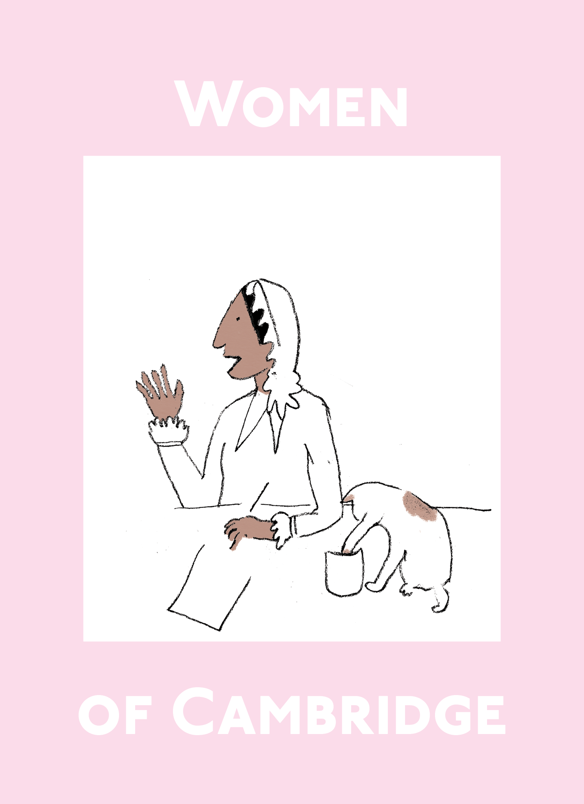
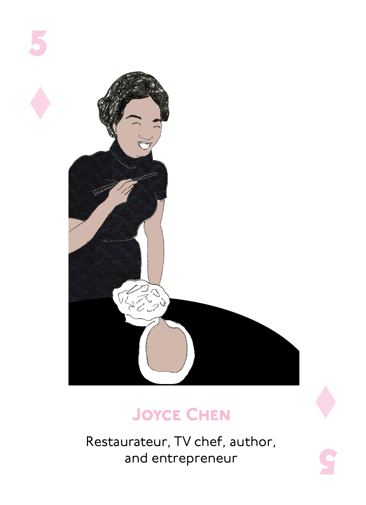
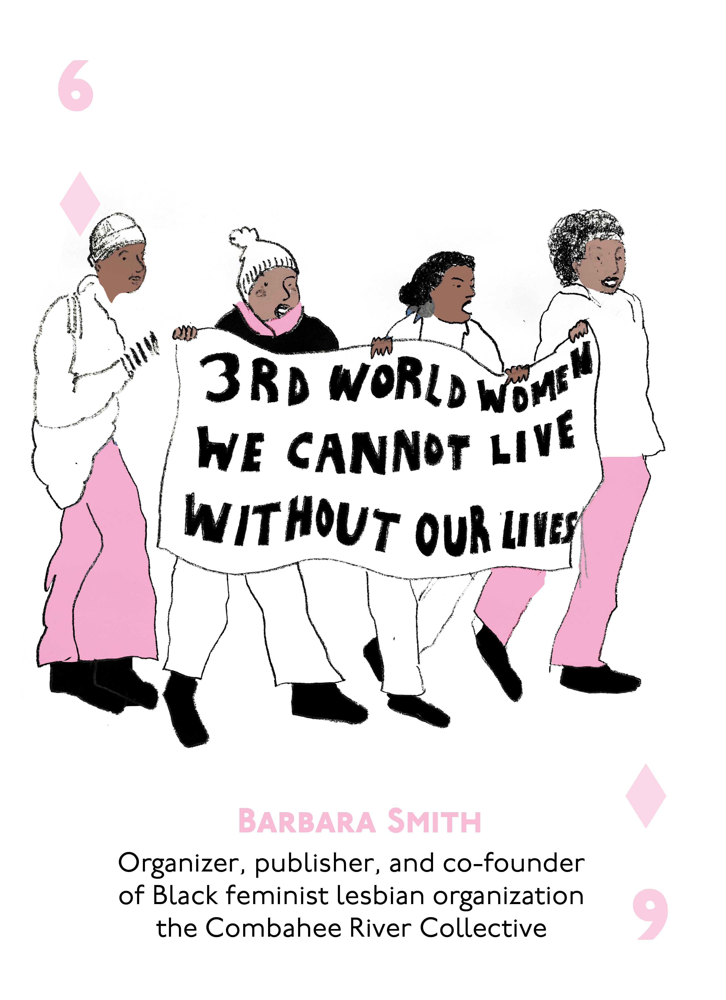
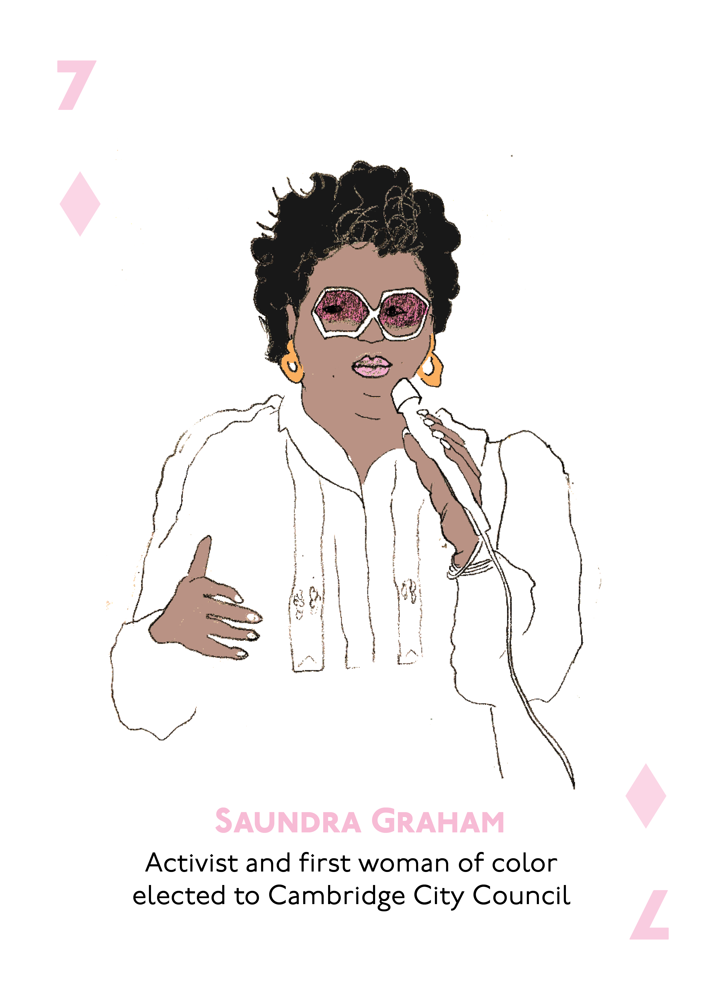

Women of Cambridge Cards
About
This set of playing cards features a diverse group of women from the history of Cambridge, Massachusetts.
Order your own copy from the Cambridge Historical Commission to use in your classroom,
or make your own set with your students using the template below.





How to use these cards in a classroom
- Play math games or use them to practice a new language
- Use them to create a card game in Scratch
- Use them as inspiration to create your own Women of Cambridge deck